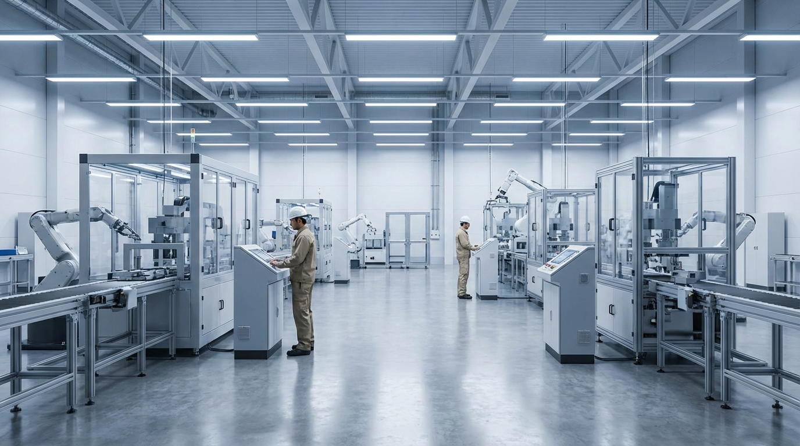

Manufacturers rely on financing to purchase CNC machines, presses, and equipment—and to cover raw materials, payroll, and expansion. Axiant Partners connects manufacturers with lenders offering equipment financing, SBA loans, working capital, and more. Whether you run machining, fabrication, or assembly, we match you with financing that fits your operation and growth plans.
Industry Overview
Manufacturing businesses face high capital requirements for CNC equipment, presses, robotics, and specialized machinery. Lead times between ordering materials, producing goods, and receiving payment create cash flow gaps. Many manufacturers need financing to acquire or upgrade equipment without draining reserves. Working capital helps cover raw materials, labor, and overhead during production cycles when receivables are outstanding.
CNC machines and industrial equipment can cost $50,000–$500,000 or more per unit. Equipment financing and working capital loans help manufacturers grow capacity and manage production costs. SBA loans support longer-term needs like real estate, facility expansion, and business acquisition, while lines of credit provide flexibility for materials and payroll.

Financing Options for Manufacturing Companies
Manufacturers use a range of financing products depending on the use of funds, timeline, and business profile. Below are the main options manufacturing companies typically use.
Equipment Financing
Manufacturing companies use equipment loans and leases to finance CNC machines, lathes, presses, forklifts, and automation. Loans spread the cost over the equipment's useful life; leases often require less upfront capital and can include upgrade options. Lenders commonly finance new and used manufacturing equipment. Explore equipment financing options.
SBA Loans
SBA 7(a) and 504 loans offer longer terms and lower down payments than conventional bank loans. Manufacturing companies use SBA financing for working capital, equipment, commercial real estate (plant, warehouse, office), and business acquisition. Approval timelines are typically 30–60 days or longer. Learn about SBA loan programs.
Working Capital Loans
Working capital loans help manufacturers cover raw materials, payroll, and overhead during production cycles. When customer payments lag or orders ramp up, short-term working capital keeps operations running. Many lenders offer terms aligned with manufacturing revenue cycles. Explore working capital options.
Business Line of Credit
A revolving line of credit gives manufacturing companies flexible access to capital. Draw when needed—for materials, payroll, or bridging a slow period—and repay as cash comes in. Lines of credit are well-suited to variable order flow and production cycles. Learn about business lines of credit.
Commercial Real Estate Loans
Owner-occupied real estate financing helps manufacturers purchase or refinance plants, warehouses, and office space. SBA 504 and conventional commercial mortgages are common. Explore commercial real estate financing.
Common Manufacturing Equipment That Businesses Finance
Manufacturing companies frequently finance CNC machines, presses, and specialized equipment. Below are common types, typical cost ranges, and why businesses finance them.

CNC Machines
CNC milling machines and machining centers produce precision parts. New CNC equipment typically costs $50,000–$500,000 or more depending on size and capabilities. Many manufacturers finance CNCs to add capacity or replace aging units without large upfront outlays.
Explore CNC financing
Lathes & Milling Machines
Manual and CNC lathes and mills handle turning, boring, and milling operations. They typically cost $20,000–$150,000 or more. Financing helps manufacturers add machining capacity for increased throughput.
Explore machining equipment financing
Press Brakes & Stamping
Press brakes and stamping presses form and cut metal. They typically cost $30,000–$300,000 or more depending on tonnage and features. Financing spreads the cost over the equipment's productive life.
Explore press financing
Injection Molding
Injection molding machines produce plastic parts. New machines range from roughly $50,000 to $500,000 or more depending on clamp tonnage. Financing helps plastic manufacturers add or replace molding capacity.
Explore injection molding financing
Industrial Robots
Robotic arms automate welding, assembly, and material handling. Robots typically cost $30,000–$150,000 or more per unit. Financing helps manufacturers automate for efficiency and labor savings.
Explore automation financing
Forklifts & Material Handling
Forklifts, pallet jacks, and conveyors move materials in the plant. Forklifts typically cost $15,000–$80,000 or more. Financing helps manufacturers add material handling capacity for production flow.
Explore forklift financingEquipment Financing Guides for Manufacturers
Manufacturers considering equipment loans often ask these questions. Our guides cover credit requirements, used equipment, rates, and approval timelines. For a full overview of equipment financing, see Equipment Financing.
Apply for Manufacturing Business Financing
Manufacturing companies need financing that fits production cycles and growth plans. Axiant Partners connects manufacturers with lenders that offer equipment loans, working capital, SBA loans, and more. Submit your information once and we match you with programs suited to your business profile. Get matched with a lender or contact our team to discuss your needs.